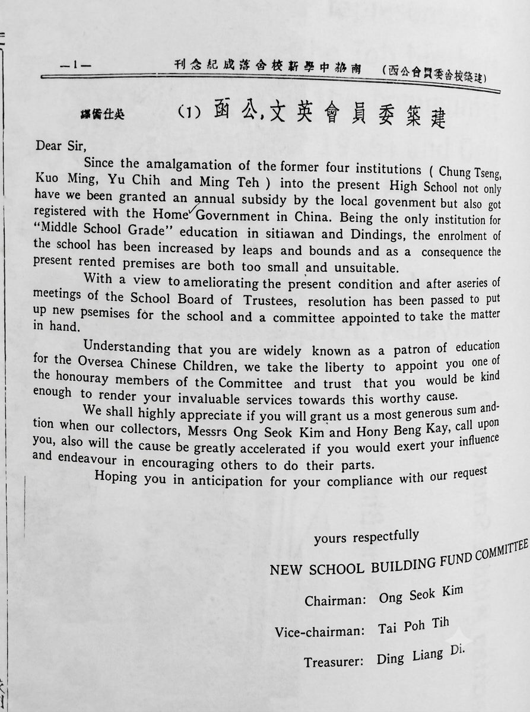
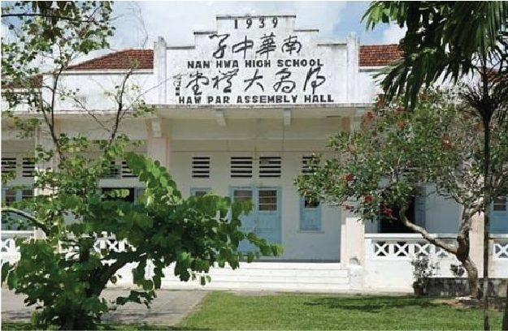
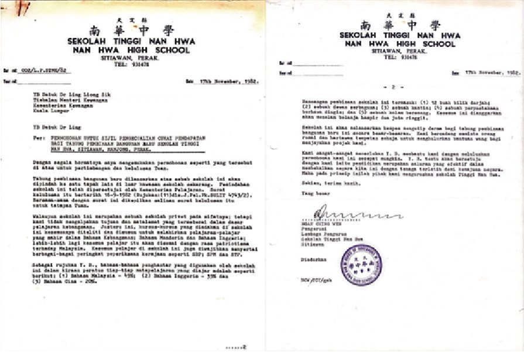
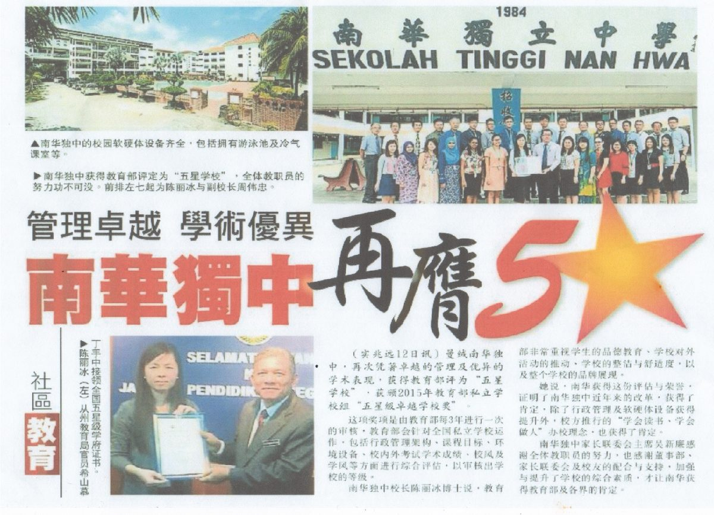
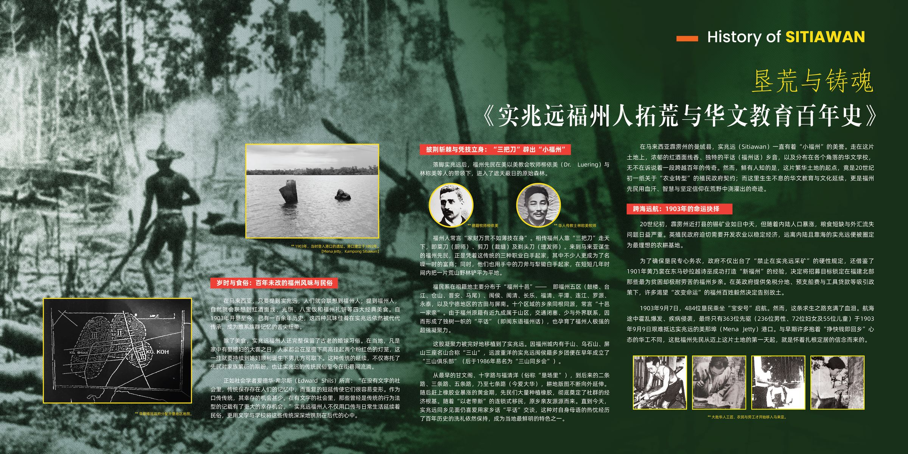
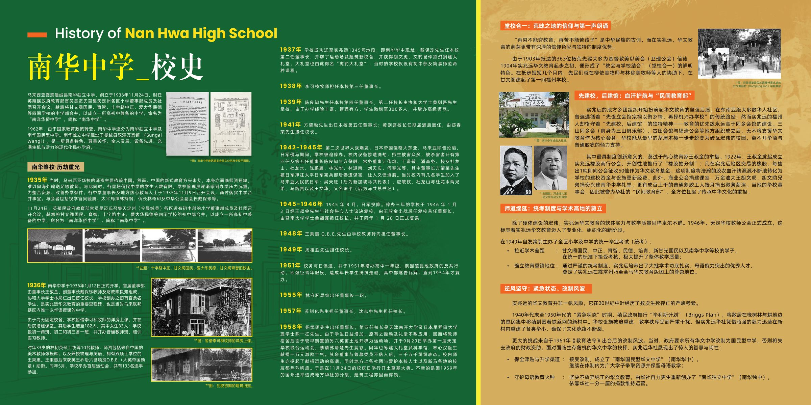
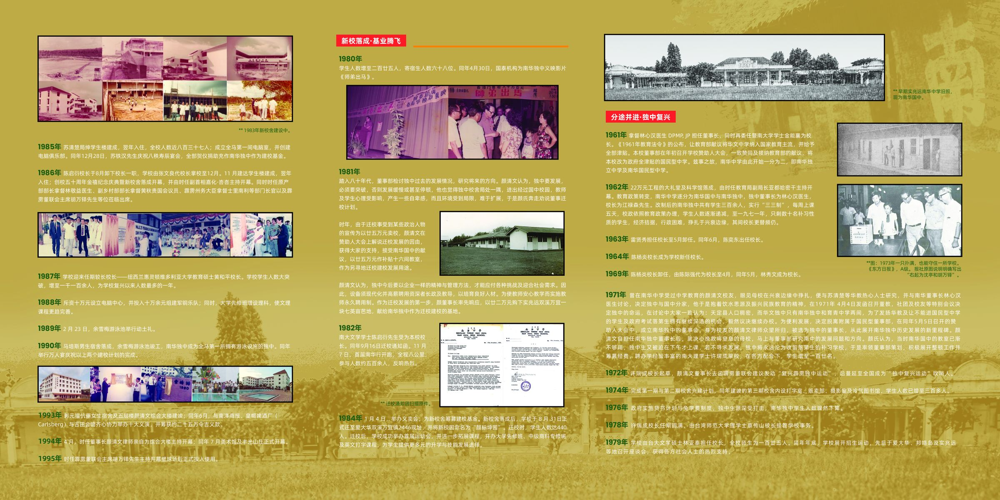
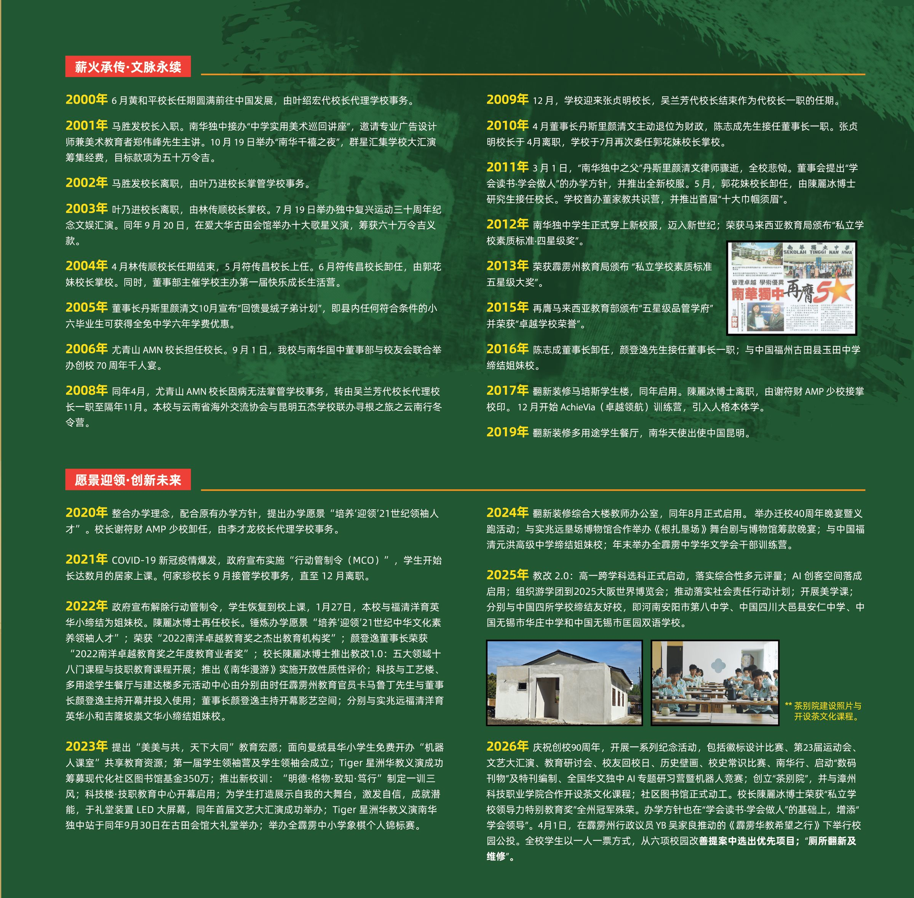
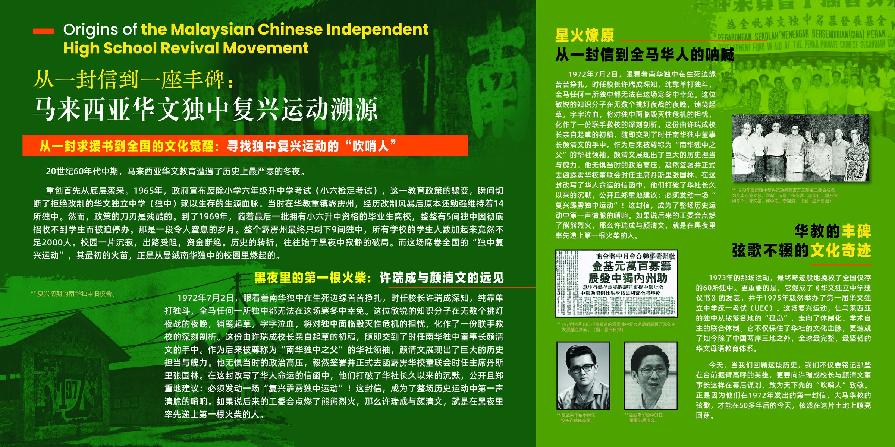

1935年
今天巍峨耸立在颜标坤园壮丽堂皇的南华独中，创立于1935年11月24日。因英殖民地教育部教官吴迈氏的献议，召集当时各地小学的董事部，以及天定州各社会团召开会议，议决将当时的甘文阁国民、育智、十字路中正、爱大华民德等四间中学部合并，成立“南洋华侨中学”，简称“南华中学”。


南华春秋 · 1935–至今
四间中学部合并、日据停办、战后复办、改制存亡、救校迁校、扩建腾飞——南华独中的九十年，是曼绒华社一代代人接力点灯的九十年。
本页史料整理自本校《勿忘历史 · 牢记使命》专栏。
1903 – 1961
Before Nan Hwa: Foochow Pioneers of Sitiawan
南华的故事，要从1903年363位福州先民在实兆远美那埠上岸说起。他们「先建校，后建馆」，把胶林里的血汗钱，一分一厘换成了华校的课室。
20世纪初，霹雳州近打县的锡矿业如日中天，但随着内陆人口暴涨，粮食短缺与外汇流失问题日益严重。英殖民政府迫切需要开发农业，远离内陆且靠海的实兆远便被圈定为最理想的农耕基地。政府借鉴1901年黄乃裳在砂拉越诗巫打造「新福州」的经验，将招募目标锁定在福建北部的福州乡亲。1903年9月7日，484位垦民乘坐「宝安号」启航；航海途中霍乱爆发，最终只有363位先驱（236位男性、72位妇女及55位儿童）于9月9日抵达实兆远美那埠。这批福州先民从迈上这片土地的第一天起，就是怀着扎根定居的信念而来的。
福州先民在美以美教会牧师柳依美（Dr. Luering）与林称美等人的带领下，进入遮天蔽日的原始森林。相传福州人靠菜刀、剪刀、剃头刀「三把刀」走天下，他们也用刀斧与犁锄，把荒山野林铲平为平地。从甘文阁、十字路与福清洋，到二条路、三条路、五条路乃至七条路（今爱大华），耕地版图不断向外延伸；随后赶上橡胶业黄金期，奠定了社群的经济根基。直到今天，实兆远同乡见面仍喜爱用「平话」交谈。
提到实兆远，人们就会联想到福州人；提到福州人，自然就会联想到红酒面线、光饼、八宝饭和福州礼饼四大经典美食，百余年来代代传承，成为维系族群记忆的舌尖纽带。实兆远福州人也完整保留了古老的婚嫁习俗：家中娶媳妇，屋檐下高挂两个粉红色灯笼，一直挂到媳妇顺利诞下男儿方可取下。他们不仅用口传与日常生活延续民俗，更用文字与学校，把这些传统镌刻在后代心中。
由于拓荒先驱大多为基督教美以美会信徒，1904年实兆远华文教育起步之初，便形成「教会与学校结合」的特色，先民在甘文阁建起了第一间福州学校。东南亚华人社区多是先设会馆、再办学校，实兆远福州人却恪守「先建校，后建馆」——教育的优先级永远高于会馆建设。1922年，王叔金发起成立实兆远橡胶商行公会，推行「橡胶抽分制」：每售出一吨橡胶即征收五十仙作为华文教育基金。胡文虎、胡文豹兄弟捐建南华中学礼堂，成百上千的割胶工人按月捐出微薄薪津；当地华校董事会，因此被誉为华社的「民间教育部」。
1946年天定华校教师公会成立，1949年自发主办全区小学及中学统一毕业考试，南华中学等校学子在统一标准下接受考核。紧急状态时期，垦民被集中移殖到新村，华社迅速在新村内重建华小。1961年《教育法令》出台后，实兆远华社一方面接受改制成立南华国民型华文中学，保全津贴与升学渠道；另一方面自力更生重新创办南华独立中学，守护母语教育的火种。
整理自校长室提供之《垦荒与铸魂：实兆远福州人拓荒与华文教育百年史》。
1935 – 1945
The Birth of Nan Hwa & the Continuity of Culture
南华中学创立于1935年，历经筹建、扩展与日军侵占停办，师生校友抗敌不屈，展现民族精神与教育使命。
今天巍峨耸立在颜标坤园壮丽堂皇的南华独中，创立于1935年11月24日。因英殖民地教育部教官吴迈氏的献议，召集当时各地小学的董事部，以及天定州各社会团召开会议，议决将当时的甘文阁国民、育智、十字路中正、爱大华民德等四间中学部合并，成立“南洋华侨中学”，简称“南华中学”。
1936年1月12日宣告成立并开学，推选王叔金先生为第一届常务董事会董事长兼建校委员会主席。校长为协和大学学士林局仁先生，学生百多位。当时的校舍，乃临时租用甘文阁李可祯牧师之洋楼，学生逐渐增多，教室不敷应用，准备购地自建校舍。在校董同仁等的努力下，购得甘文阁（旧校址）六英亩之地皮，于是积极进行筹募活动。


戴保珍先生接任董事长，他开辟了运动场及建校舍，并获得胡文虎、文豹昆仲独资捐建大礼堂，耗时四年，教室、虎豹大礼堂先后落成，当时只设初中部及简易师范部。

李可祯先生担任董事长。
1939年至1940年陈良知先生担任董事长，林居仁先生掌校三载。接着第二任校长为协和大学的黄则吾先生，学生激增三百多人，并增办高级师范，两年期满，黄则吾先生辞职。
1941年12月8日日军入侵，马来亚沦陷。学校停课，南华遭受洗劫，师生被害，损失惨重，被迫停办。大礼堂与课室都沦为收藏树胶场所与养牛栏。校友、董事奋起抗敌。陈良知、方肇荣、潘高务、丁道敬、林光华、杜龙山、江傅灿等人相续遇害；校友王文华为抗日军事委员会主席，改名陈平；古标权为抗日驻实天主任，改名马平魁。个个奋勇抗日、牺牲，威武不屈，令人敬佩。其他学生从农从商，不为敌人利用，此乃民族精神光荣。
1946 – 1961
In the Aftermath: Persevering Through Adversity
1946年复办南华，历任多位董事长与校长，扩建运动场、大礼堂与科学馆，师生校友积极捐助，推动校务发展。
战事结束后，停办三年余的南华，于1946年正月3日由王叔金先生及社会热心教育人士议决复办。首任复校校长为暨南大学学士金能襄先生。在董教生三方面通力合作下，校舍教具等相继就绪，便于1946年1月28日复课。

战后复校的首任董事长是王叔金先生，1948年王秉惠先生就任董事长一职。
校务与日俱增，并于1954年增办高中部。1955年由林守駓先生接任董事长，1957年董事长为苏钊化先生。至于校长方面，1949年周祖胜担任校长，1957年则由沈志中先生担任第三任校长。
1958年杨武明先生出任董事长，第四任校长为天津南开大学及日本早稻田大学理学士陈一征先生。由于学生日益增加，原有之操场及礼堂不敷应用，因而将教师宿舍后的六英亩土地开辟为运动场。在董教生团结一致的力量下，学校运动场于是年9月间完成，并于9月29日第一届天定华校联合运动会中的公开项目越野赛跑启用，恭请苏清楚先生剪彩开幕。
同年筹建大礼堂及科学馆，几经讨论、设计绘画，9月间正式发动募捐。当时由热爱南华中学的林心汉医生出任筹委会主席，他慷慨捐助建筑费一万元以为首倡，其他董事与筹募委员亦不落人后地各捐五千、三千、两千不等；校内师生掀起了建校献捐运动的高潮，地方上各社团及爱护本校人士、星马各地的校友都热烈响应，遂于11月24日校庆纪念日举行开土奠基大典。不幸的是1959年建筑工程正在积极进行、各方募款陆续收缴之际，却遇上州议员竞选及国会大选，两次选举分裂了地方上的团结，募捐工作迟滞，建筑工程被迫停顿。
1961年，林心汉医生上任第十一任董事长一职。第五任校长为复校第一任的金能襄先生，金校长上任后，继续筹建大礼堂及科学馆。
1962 – 1978
Reborn Stronger, Achieving Greater Glory
1961年10月21日，国会通过《1961年教育法令》，强调发展以国语为主要教学媒介的教育制度。这对南华是沉重的打击——南华坚持华教，宁可放弃津贴金，成为独立中学！20世纪70年代，南华独中一度濒临关闭，以颜清文律师为首的华教工作者展开轰轰烈烈的拯救运动：拯救的不仅是南华独中，更是华文教育。
22万元之大礼堂及科学馆建设方告落成，由当时副教育局长亚都哈蜜干主持开幕。由于教育政策转变，南华中学遂分为南华国中与南华独中：前者由金能襄先生担任校长，后者则由南大学士江禄森先生处理校务。独中学生人数逐渐减少，江禄森先生辞职后，由台湾师范大学毕业的张奕东先生掌校。
1964年由陈扬炎先生接任校长职务。1969年，陈际强先生担任代校长至4月，5月开始则由林秀文先生出任校长。
学校经济拮据，在存亡边缘挣扎。4月4日由校方发函召开董教、社团以及校友等特别会议，毅然议决继续把南华独中办下去，并即刻开展救校运动。原任董事长颜清文律师再度被推选为董事长，南大理学士许瑞成先生出任复兴后首任校长。
1972年学生人数增至120位，为了南华独中的发展，在董教生三方面通力合作之下，兴建独中第一期四间教室；1973年兴建第二期校舍八间教室；1974年兴建第三期校舍，内设有打字室、贩卖部、摄影室及冷气图书馆，学生人数增至三百多位。
1972年，许瑞成校长起草、颜清文董事长去函霹雳华校董联会，建议发动「复兴霹雳独中运动」，此举后来蔓延全国，成为「独中复兴运动」的吹哨之声。

20世纪60年代中期，马来西亚华文教育遭遇了历史上最严寒的冬夜。1965年，政府宣布废除小学六年级升中学考试，这一教育政策的骤变，瞬间切断了拒绝改制的华文独立中学赖以生存的生源血脉。当时在华教重镇霹雳州，经历改制风暴后原本还勉强维持着14所独中；到了1969年，随着最后一批拥有小六升中资格的毕业生离校，整整有5间独中因彻底招收不到学生而被迫停办。整个霹雳州最终只剩下9间独中，所有学校的学生人数加起来竟然不足2000人。
1972年7月2日，眼看着南华独中在生死边缘苦苦挣扎，时任校长许瑞成深知，纯靠单打独斗，全马任何一所独中都无法在这场寒冬中幸免。他铺笺起草，将对独中面临毁灭性危机的担忧，化作一份联手救校的深刻剖析。这份初稿随即交到时任董事长颜清文手中。作为后来被尊称为「南华独中之父」的华社领袖，颜清文毅然签署并正式去函霹雳华校董联会时任主席丹斯里张国林，公开且郑重地建议：必须发动一场「复兴霹雳独中运动」。这封信，成为整场历史运动中第一声清脆的哨响。
这封公函促成了1972年底霹雳州9所独中校长的进一步串联，更直接启发并催生了1973年以胡万铎等人为核心的百万复兴大计。在「再穷不能穷教育」的信念支撑下，从富商巨贾到割胶工人、三轮车夫和小贩，无分阶级、倾力相助；义卖、义演、义踏、义剪此起彼伏，人们用手中的血汗钱，筑起了一条坚韧的母语文化防线。
1973年的独中复兴运动推动独中形成更统一的办学路线、课程与考试制度，并成为后来华文独中统一考试（UEC）发展的重要历史背景。1972年的南华来函，是霹雳独中复兴运动萌芽阶段一项可以明确追溯的书面行动；1973年以后，胡万铎、沈亭及各校董教与社会人士进一步把救校诉求转化为广泛的社会运动。
整理自校长室提供之《霹雳独中复兴运动——南华》（史料核查：林连玉基金〈华教节特辑专访：霹雳独中复兴运动50周年〉）。
1976年政府实施贷书及免学费制度，独中生源深受打击，南华独中学生人数骤然下降。1977年许瑞成校长辞职。1978年台湾师范大学理学士蔡传山先生担任第二任校长，学生人数132位；至年杪蔡校长辞职，后由台大文学硕士林亚泰先生担任第三任校长，全校学生人数只有125名。年杪，董事部、社会人士及教职员同心协力，改变招生策略，先后在爱大华、邦咯岛及实兆远等区召开座谈会，获得各界热烈反应。
1979 – 2010
Innovation and Progress with the Times
南华独中自1980年起迁校扩建，创办专修班与国际招生，兴建多栋校舍及设施，积极筹款办活动，推动学术与艺体发展，迈向现代化与国际化。
学生人数增至225人，宿舍生人数68人。同年4月30日，国泰机构以《师弟出马》为南华独中义映。

董事部及赞助人大会议决迁校另谋发展，以期南华独中能够负起特定的教育使命：一方面维护传统华文中学的生存与发展，另一方面开办各项专修班，适应当前华社的需求。董事长颜清文律师献出其独资购买、座落于爱大华与实兆远双溪万宜旁的一块七英亩地，作为建设新校舍用途。颜律师对华教的热心，激起了各界响应，纷纷出钱出力。

南大文学士陈启衍先生受聘为校长，学生人数有290位。同年9月16日发出迁校通知函。


学生人数达320位。同年4月27日进行新校舍动土典礼，后发动全校师生筹募建校基金，获得社会各阶层人士支持，8月6日正式动工。是年开办大学先修班及中级商科专修班。

正月4日举办南华独中义卖会，筹募建校基金。是年学生人数440位，8月31日新校舍落成，同日迁入新校舍上课，并通过赞助人大会议决新校园命名为“颜标坤园”，同年增设视听英文打字班。

成立电脑俱乐部。苏清楚局绅学生楼落成（女生宿舍），可容纳150位寄宿生，全校学生人数达870名。同年12月28日，苏铁汉先生庆祝八秩寿辰宴会，全部贺仪捐助充作南华独中建校基金。
4月5日，在董事长颜清文律师领导之下的建达集团斥资兴建四层学生楼，举行奠基典礼暨第二届常年运动会，恭请时任副教育部长黄俊杰主持奠基典礼，副新闻部长黄秋贵则主持运动会开幕典礼。是年9月委任训导主任张文良为代校长；11月建达学生楼落成（男生宿舍），可容纳250名寄宿生。

1987年邀请毕业于纽西兰威灵顿维多利亚大学的教育硕士黄和平先生出任校长，学生人数大突破，增至1100多名，为复校以来最多人数的一年。1988年，耗资十万元设立电脑中心，及耗资十万余元成立军铜乐队；大学先修班增设理科班，使先修班课程更趋完整。1989年2月23日，余雪梅游泳池举行动土礼。

7月，耗资50万元的五层楼新宿舍（马培斯男生宿舍）以及耗资25万元的余雪梅游泳池建竣。同年举行万人宴，庆祝以上两项建校计划的完成。

郭元福伉俪女生宿舍及五层楼颜清文综合大楼建竣；同年6月，与南洋商报、皇帽啤酒厂（Carlsberg）与古田会馆齐心协力举办十大义演，筹获约二十五万令吉义款。
4月，时任董事长颜清文律师亲自为综合大楼主持开幕；同年7月美术馆及丰光山庄正式开幕。
时任霹雳董联会主席胡万铎先生主持壁球场开幕，壁球场正式投入使用。
6月，黄和平校长任期圆满前往中国发展，由叶绍宏代校长代理学校事务。
马胜发校长入职。南华独中接办「中学实用美术巡回讲座」，邀请专业广告设计师兼美术教育者郑伟峰先生主讲。10月19日举办「南华千禧之夜」，群星汇集学校大汇演筹集经费，目标款项为五十万令吉。
2002年马胜发校长离职，由叶乃进校长掌管学校事务；2003年叶乃进校长离职，由林传顺校长掌校。2003年7月19日举办独中复兴运动三十周年纪念文娱汇演；同年9月20日，在爱大华古田会馆举办十大歌星义演，筹获六十万令吉义款。
4月林传顺校长任期结束，5月符传昌校长上任；6月符传昌校长卸任，由郭花妹校长掌校。同年，董事部主催学校主办第一届快乐成长生活营。
董事长丹斯里颜清文10月宣布「回馈曼绒子弟计划」：县内任何符合条件的小六毕业生，可获全免中学六年学费优惠。
尤青山 AMN 校长担任校长。9月1日，本校与南华国中董事部及校友会联合举办创校70周年千人宴。
2008年4月，尤青山 AMN 校长因病无法掌管学校事务，转由吴兰芳代校长代理至翌年11月；同年，本校与云南省海外交流协会及昆明五杰学校联办寻根之旅云南行冬令营。2009年12月，张贞明校长上任。
4月，董事长丹斯里颜清文主动退任为财政，陈志成先生接任董事长。张贞明校长于4月离职，学校于7月再次委任郭花妹校长掌校。
2011 – 2020
Towards Excellence: Holistic Education
2011至2020年间，办学发展、师生交流、校园建设与赛事获奖不断推进；2012年获马来西亚教育局私立学校素质标准四星级奖，2013年获霹雳州教育局五星级大奖，2015年再膺教育部五星级品管学府。
3月1日，「南华独中之父」丹斯里颜清文律师骤逝，全校悲恸。董事会提出「学会读书·学会做人」的办学方针，并推出全新校服。5月，郭花妹校长卸任，由陳麗冰接任校长。学校首办董家教共识营，并推出首届「十大巾帼须眉」。
学生正式穿上新校服；荣获马来西亚教育局颁发「私立学校素质标准·四星级奖」。
荣获霹雳州教育局颁发「私立学校素质标准·五星级大奖」。
再膺马来西亚教育部颁发「五星级品管学府」，并荣获「卓越学校荣誉」。

陈志成董事长卸任，颜登逸先生接任董事长；与中国福州古田县玉田中学缔结姐妹校。
翻新装修马培斯学生楼，同年启用。陳麗冰校长离职，由谢符财 AMP 少校接掌校印。12月开始 AchieVia（卓越领航）训练营，引入人格本体学。
翻新装修多用途学生餐厅；南华天使出使中国昆明。
整合办学理念，配合原有办学方针，提出办学愿景「培养『迎领』21世纪领袖人才」。谢符财 AMP 少校卸任，由李才龙校长代理学校事务。
2018 年以后的校园纪事，可在按年新闻馆逐日回看。
2021 – 至今
Staying True, Writing New Chapters
课程改革2.0、AI 创客空间、技职教育大楼、中国茶文化馆——这一段历史，正在发生。
新冠疫情爆发，政府实施行动管制令（MCO），学生开始长达数月的居家上课。何家珍校长9月接管学校事务，至12月离职。
行动管制令解除，学生恢复到校上课。陳麗冰博士再任校长，锤炼办学愿景为「培养『迎领』21世纪中华文化素养领袖人才」，推出教改1.0：五大领域十八门课程与技职教育课程，并推出《南华漫游》实施开放性质性评价。
荣获「2022南洋卓越教育奖之杰出教育机构奖」，颜登逸董事长荣获「年度教育业者奖」。科技与工艺楼、多用途学生餐厅与建达楼多元活动中心，以及影艺空间相继开幕启用。1月27日与实兆远福清洋育英华小缔结姐妹校，并与吉隆坡崇文华小缔结姐妹校。
提出「美美与共，天下大同」教育宏愿；面向曼绒县华小学生免费开办「机器人课室」，共享教育资源。第一届学生领袖营及学生领袖会成立。推出新校训「明德·格物·致知·笃行」，制定一训三风。科技楼·技职教育中心开幕启用。礼堂装置 LED 大屏幕，首届文艺大汇演成功举办。
Tiger 星洲华教义演成功筹募现代化社区图书馆基金350万令吉，南华独中站于9月30日在古田会馆大礼堂举办；同年举办全霹雳中小学象棋个人锦标赛。
翻新装修综合大楼教师办公室，8月正式启用。举办迁校40周年晚宴暨义跑活动；与实兆远垦场博物馆合作举办《根扎垦场》舞台剧与博物馆筹款晚宴；与中国福清元洪高级中学缔结姐妹校；年末举办全霹雳中学华文学会干部训练营。
教改2.0：高一跨学科选科正式启动，落实综合性多元评量。AI 创客空间落成启用；组织游学团到2025大阪世界博览会；推动落实社会责任行动计划；开展美学课。与河南安阳市第八中学、四川大邑县安仁中学、无锡市华庄中学及无锡市匡园双语学校缔结友好校。
庆祝创校90周年，开展徽标设计比赛、第23届运动会、文艺大汇演、教育研讨会、校友回校日、历史壁画、校史常识比赛、南华行、「数码刊物」及特刊编制、全国华文独中 AI 专题研习营暨机器人竞赛等一系列纪念活动。创立「茶别院」，并与漳州科技职业学院合作开设茶文化课程；社区图书馆正式动工。校长陳麗冰博士荣获「私立学校领导力特别教育奖」全州冠军。办学方针在「学会读书·学会做人」的基础上，增添「学会领导」。
4月1日，在霹雳州行政议员吴家良推动的《霹雳华教希望之行》下举行校园公投，全校学生一人一票，从六项校园改善提案中选出优先项目：厕所翻新及维修。
南华的每一天都在被记录：每日南华 · 按年新闻馆；2026 年，我们迎来九十周年校庆。
1936 – 至今
Principals of Nan Hwa
历任董事长名表与肖像，见董事会。
九十周年
90th Anniversary History Exhibition
九十周年校史展的五块展版，点击可看大图。




